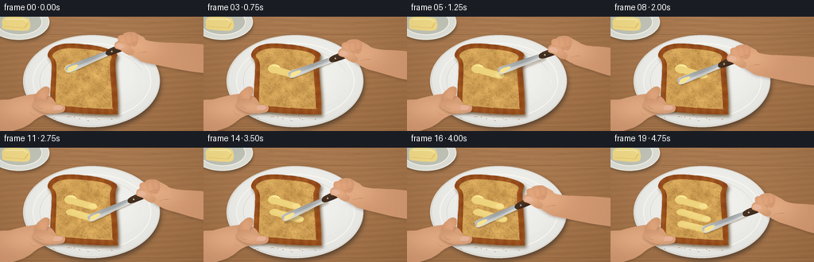
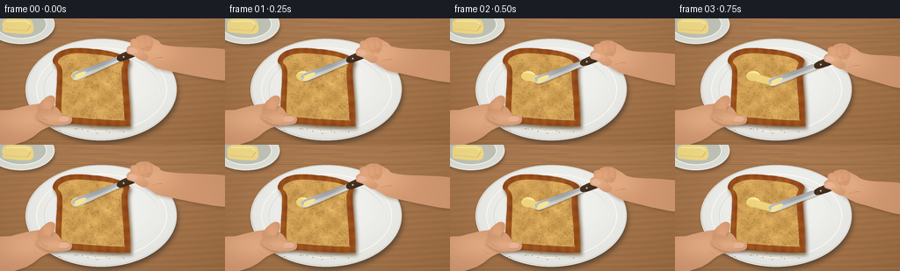
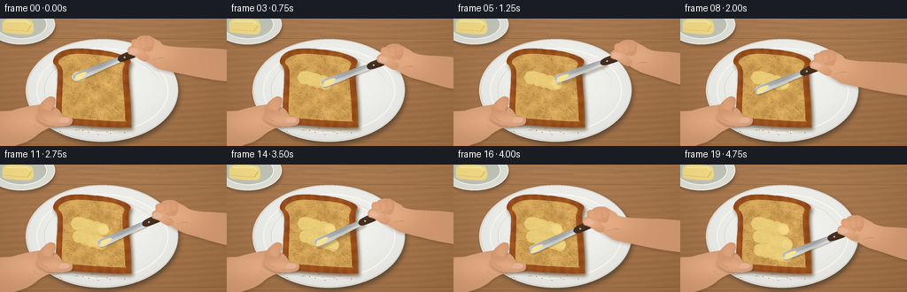
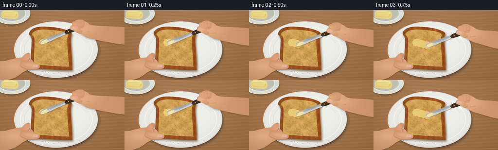
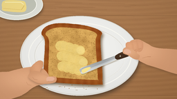

CODING AGENTS AS PIXEL WORLD MODELS
traex/GPT-6.1-Sol · motion_rationality_0004
点击播放 · 原生 RGB 像素
逐轮保存的候选
回放视频、检查图与代码变化。
每份候选均可单独播放。实际图片检查记录在下方工具轨迹中。
候选 01播放与检查图
点击播放 · 原生 RGB 像素


展开代码变化
--- 上一保存版本
+++ 本次保存版本
@@ -0,0 +1,223 @@
+from pathlib import Path
+import numpy as np
+from PIL import Image, ImageDraw, ImageFilter
+import artifact_io
+
+S=4
+W,H=256,144
+SZ=(W*S,H*S)
+rng=np.random.default_rng(42)
+
+def mask_shape(points=None,ellipse=None):
+ m=Image.new('L',SZ,0); d=ImageDraw.Draw(m)
+ if points is not None:d.polygon([(int(x*S),int(y*S)) for x,y in points],fill=255)
+ if ellipse is not None:d.ellipse(tuple(int(z*S) for z in ellipse),fill=255)
+ return m
+
+def path_mask(points):
+ m=Image.new('L',SZ);d=ImageDraw.Draw(m);d.polygon([(x*S,y*S) for x,y in points],fill=255)
+ return m
+
+def overlay(im,mask,arr):
+ if isinstance(arr,tuple):im.paste(arr,(0,0),mask)
+ else:im.paste(Image.fromarray(np.uint8(np.clip(arr,0,255))),(0,0),mask)
+
+def line(d,pts,fill,width=1):d.line([(int(x*S),int(y*S)) for x,y in pts],fill=fill,width=max(1,int(width*S)))
+def ellipse(d,box,fill,outline=None,width=1):d.ellipse(tuple(int(v*S) for v in box),fill=fill,outline=outline,width=max(1,int(width*S)))
+
+def smooth_poly(ctrl,steps=10):
+ out=[]
+ for i in range(len(ctrl)):
+ a=np.array(ctrl[(i-1)%len(ctrl)]);b=np.array(ctrl[i]);c=np.array(ctrl[(i+1)%len(ctrl)]);e=np.array(ctrl[(i+2)%len(ctrl)])
+ for t in np.linspace(0,1,steps,endpoint=False):
+ out.append(tuple(.5*((2*b)+(-a+c)*t+(2*a-5*b+4*c-e)*t*t+(-a+3*b-3*c+e)*t*t*t)))
+ return out
+
+Y,X=np.mgrid[0:H*S,0:W*S]/S
+# warm oak breakfast table: stable fine grain
+noise=rng.normal(0,1.4,SZ[::-1])
+grain=np.sin(Y*.9+np.sin(X*.027)*2.5)+.55*np.sin(Y*4.0+X*.016)
+shade=5*np.sin(X*.014)-.065*Y
+wood=np.stack([168+shade+grain*3+noise,120+shade+grain*2.7+noise,78+shade+grain*2+noise],axis=-1)
+base=Image.fromarray(np.uint8(np.clip(wood,0,255)))
+d=ImageDraw.Draw(base)
+for y in (22,138):
+ line(d,[(0,y),(256,y+1)],(112,77,48),.55)
+ line(d,[(0,y+1),(256,y+2)],(186,137,88),.4)
+for _ in range(70):
+ y=rng.uniform(0,144);x=rng.uniform(0,256);ln=rng.uniform(4,54)
+ line(d,[(x,y),(x+ln/2,y+rng.uniform(-.4,.4)),(x+ln,y)],(149,103,65),.18)
+# plate soft contact shadow
+m=mask_shape(ellipse=(33,27,202,142)).filter(ImageFilter.GaussianBlur(3*S))
+overlay(base,m,(88,66,47))
+pm=mask_shape(ellipse=(29,23,201,139))
+rad=((X-113)/86)**2+((Y-81)/58)**2
+c=239-8*rad+3*(81-Y)/58
+plate=np.stack([c+3,c+3,c],axis=-1)
+overlay(base,pm,plate)
+d=ImageDraw.Draw(base)
+ellipse(d,(30,23,201,138),None,(218,215,205),1.1)
+ellipse(d,(41,33,190,129),None,(250,249,242),1.4)
+ellipse(d,(50,40,181,122),None,(210,207,197),.6)
+ellipse(d,(51,41,181,122),None,(247,246,239),.6)
+# small butter dish in rear left corner
+m=mask_shape(ellipse=(-11,-10,62,31)).filter(ImageFilter.GaussianBlur(2*S));overlay(base,m,(111,81,53))
+d=ImageDraw.Draw(base)
+ellipse(d,(-15,-16,62,29),(225,227,219),(242,243,235),1)
+ellipse(d,(-5,-10,53,23),(195,198,185),(251,251,243),1)
+# half block of butter in dish
+pts=smooth_poly([(6,1),(31,1),(37,5),(35,17),(7,16),(3,11)],7)
+bm=mask_shape(pts)
+col=np.stack([245+Y*.04,224-Y*.2,139-Y*.15],axis=-1);overlay(base,bm,col)
+d=ImageDraw.Draw(base)
+line(d,[(7,3),(30,3),(34,6)],(255,245,187),1.2)
+line(d,[(5,12),(31,14),(35,8)],(205,171,81),.6)
+# toast silhouette curved shoulders and crust
+outer=smooth_poly([(65,61),(60,49),(66,39),(82,34),(108,35),(131,39),(147,47),(145,60),(148,115),(140,123),(70,119),(63,112)],12)
+inner=smooth_poly([(71,61),(66,50),(70,44),(84,40),(108,41),(129,44),(140,50),(138,62),(141,111),(136,116),(75,112),(70,108)],12)
+toastmask=mask_shape(outer);innermask=mask_shape(inner)
+shadow=Image.new('L',SZ);shadow.paste(toastmask,(2*S,3*S));shadow=shadow.filter(ImageFilter.GaussianBlur(2*S));overlay(base,shadow,(126,108,83))
+# crust, baked bread texture
+tex=rng.normal(0,1,SZ[::-1]);cloud=np.sin(X*.17+np.sin(Y*.13))*np.sin(Y*.19)
+edge=5*np.sin(X*.6)+4*np.sin(Y*.5)
+crust=np.stack([152+edge+tex*4+cloud*5,79+edge+tex*3+cloud*5,29+edge*.7+tex*2],axis=-1)
+overlay(base,toastmask,crust)
+# bread mottled crumb and browning around edges
+blur_noise=np.array(Image.fromarray(np.uint8(rng.uniform(0,255,SZ[::-1]))).filter(ImageFilter.GaussianBlur(1.7*S))).astype(float)-127
+bread_val=cloud*9+blur_noise*1.8+tex*3
+bread=np.stack([211+bread_val,163+bread_val,87+bread_val*.75],axis=-1)
+overlay(base,innermask,bread)
+d=ImageDraw.Draw(base)
+# crumb holes and toasted islands clipped to inside
+crumb=Image.new('RGBA',SZ);cd=ImageDraw.Draw(crumb)
+for _ in range(1150):
+ x,y=rng.uniform(67,142),rng.uniform(40,116)
+ if innermask.getpixel((int(x*S),int(y*S)))<128:continue
+ r=rng.uniform(.12,.7)
+ col=(120,73,26,rng.integers(40,125).item())
+ ellipse(cd,(x-r,y-r*.64,x+r,y+r*.64),col)
+ if r>.43:line(cd,[(x-r*.5,y+r*.4),(x+r*.5,y+r*.4)],(251,211,131,90),.22)
+base=Image.alpha_composite(base.convert('RGBA'),crumb).convert('RGB')
+# a few crust bubbles and crumbs on plate
+for _ in range(35):
+ x,y=rng.uniform(60,151),rng.uniform(119,131)
+ if toastmask.getpixel((min(int(x*S),W*S-1),min(int(y*S),H*S-1)))>100:continue
+ d=ImageDraw.Draw(base);r=rng.uniform(.15,.55);ellipse(d,(x-r,y-r,x+r,y+r),(146,99,49))
+
+# hands model: shaded organic contours, not floating tools
+skinnoise=rng.normal(0,.7,SZ[::-1])
+def skin(im,pts,center,scale=(30,15),tone=(211,153,113),shadow=True):
+ m=mask_shape(smooth_poly(pts,8))
+ if shadow:
+ sh=Image.new('L',SZ);sh.paste(m,(0,2*S));sh=sh.filter(ImageFilter.GaussianBlur(1.4*S));sh=sh.point(lambda p:int(p*.23));overlay(im,sh,(62,41,29))
+ g=np.exp(-(((X-center[0])/scale[0])**2+((Y-center[1])/scale[1])**2))
+ arr=np.stack([tone[0]+g*19+skinnoise,tone[1]+g*20+skinnoise,tone[2]+g*19+skinnoise],axis=-1)
+ overlay(im,m,arr)
+ return m
+
+def left_hand(im):
+ # stabilizing thumb on lower crust, fingers curled beside the slice
+ skin(im,[(-6,109),(13,104),(33,99),(49,97),(58,98),(66,103),(71,112),(67,121),(50,126),(28,140),(-6,145)],(35,115),(40,17))
+ skin(im,[(44,100),(50,92),(57,88),(62,90),(62,97),(58,103),(58,111),(52,115),(46,110)],(54,99),(9,13),tone=(207,146,105))
+ skin(im,[(41,112),(46,104),(56,104),(68,111),(79,111),(82,115),(79,120),(67,122),(53,120)],(62,114),(20,7))
+ d=ImageDraw.Draw(im)
+ # thumb nail, oriented horizontally
+ pts=smooth_poly([(69,112),(76,112),(79,115),(76,118),(69,118),(67,116)],6)
+ overlay(im,mask_shape(pts),(233,181,153))
+ line(d,[(69,118),(76,118),(79,115)],(177,120,91),.4)
+ line(d,[(47,112),(49,115),(54,116)],(169,112,79),.4)
+ line(d,[(38,119),(40,123),(45,124)],(186,126,89),.4)
+
+# movement: three continuous overlapping spreading passes with raised return strokes
+keys=[(0,87,66,0),(4,116,74,0),(5,119,70,1),(7,87,79,1),(8,89,81,0),(12,120,90,0),(13,120,86,1),(15,87,94,1),(16,90,96,0),(19,120,103,0)]
+def pose(i):
+ for a,b in zip(keys[:-1],keys[1:]):
+ if a[0]<=i<=b[0]:
+ t=(i-a[0])/(b[0]-a[0]);t=t*t*(3-2*t)
+ return np.array(a[1:])*(1-t)+np.array(b[1:])*t
+ return np.array(keys[-1][1:])
+
+butter=Image.new('RGBA',SZ)
+# initial pat already placed beneath the blade
+bd=ImageDraw.Draw(butter)
+ellipse(bd,(81,60,97,71),(245,222,126,242))
+ellipse(bd,(83,60,96,68),(255,239,158,242))
+# uneven deposition texture, accumulated and stationary
+
+def add_spread(i,p):
+ if i==0:return
+ prev=pose(i-1)
+ if p[2]>.1 or prev[2]>.1:return
+ d=ImageDraw.Draw(butter)
+ for a in np.linspace(0,1,12):
+ q=prev[:2]*(1-a)+p[:2]*a
+ x,y=q
+ ellipse(d,(x-6.0,y-3.8,x+6.1,y+4.2),(244,220,130,220))
+ ellipse(d,(x-4.8,y-3.5,x+5.7,y+2.5),(251,232,148,225))
+ # subtle parallel knife ridges, and a raised golden edge
+ x,y=p[:2];px,py=prev[:2]
+ for off in [-2.2,-.4,1.3]:
+ line(d,[(px-3,py+off),(x+2,y+off)],(255,241,176,180),.25)
+ line(d,[(px-2,py+3.8),(x+3,y+3.8)],(208,177,82,110),.28)
+
+def knife_and_right_hand(im,p,i):
+ x,y,lift=p
+ # slight change in angle as wrist guides the knife
+ ang=-.39+.04*np.sin(i*.35)
+ u=np.array([np.cos(ang),np.sin(ang)]);v=np.array([-u[1],u[0]])
+ origin=np.array([x,y-2*lift])
+ def pt(a,b):return tuple(origin+a*u+b*v)
+ blade=smooth_poly([pt(-4,0),pt(-2,-4.5),pt(12,-4.5),pt(50,-3.4),pt(55,-2.4),pt(56,2.4),pt(38,3.2),pt(1,4.2)],8)
+ bm=mask_shape(blade)
+ sh=Image.new('L',SZ);sh.paste(bm,(int((.8+lift)*S),int((1.5+lift*2)*S)));sh=sh.filter(ImageFilter.GaussianBlur((.5+lift*.5)*S));sh=sh.point(lambda z:int(z*.32));overlay(im,sh,(96,73,44))
+ # reflective satin steel blade, bright edge and darker center reflection
+ b=(X-origin[0])*v[0]+(Y-origin[1])*v[1]
+ a=(X-origin[0])*u[0]+(Y-origin[1])*u[1]
+ met=184+25*np.sin(b*.77)+12*np.cos(a*.11)+18*np.exp(-((b+2)/.75)**2)
+ metal=np.stack([met+1,met+4,met+5],axis=-1);overlay(im,bm,metal)
+ d=ImageDraw.Draw(im)
+ line(d,[pt(-2,3.4),pt(13,3.8),pt(47,2.7),pt(55,1.9)],(245,245,229),.65)
+ line(d,[pt(0,-4),pt(17,-4),pt(49,-3)],(116,120,116),.35)
+ # small buttery residue on blunt knife tip
+ res=mask_shape(smooth_poly([pt(-2,1),pt(0,-2),pt(9,-2),pt(12,0),pt(6,2.5),pt(0,3)],6))
+ overlay(im,res,(250,229,143))
+ # dark wood handle attached to tang
+ handle=smooth_poly([pt(53,-3.7),pt(76,-4.3),pt(91,-3.1),pt(94,0),pt(91,3.5),pt(77,4.4),pt(53,3.3)],8)
+ hm=mask_shape(handle);overlay(im,hm,(69,47,32))
+ line(d,[pt(57,-2.9),pt(87,-2.8)],(112,82,52),.7)
+ line(d,[pt(56,2.8),pt(88,2.9)],(40,29,22),.65)
+ for aa in (58,85):
+ cx,cy=pt(aa,0);ellipse(d,(cx-1,cy-1,cx+1,cy+1),(171,166,149));ellipse(d,(cx-.4,cy-.8,cx+.4,cy),(228,222,197))
+ # gripping hand and wrist extending naturally out of the right edge
+ cx,cy=pt(78,-1)
+ skin(im,[(cx-4,cy-13),(cx+8,cy-16),(cx+21,cy-10),(cx+34,cy-4),(269,cy+3),(269,cy+35),(cx+31,cy+24),(cx+13,cy+17),(cx+2,cy+9),(cx-5,cy+1)],(cx+13,cy+1),(31,18))
+ # bent fingers wrapped over the handle from its upper side
+ for j in range(3):
+ fx=cx+8-j*7;fy=cy-9+j*1.8
+ skin(im,[(fx-4,fy-5),(fx+1,fy-7),(fx+6,fy-4),(fx+7,fy+3),(fx+5,fy+9),(fx+1,fy+11),(fx-3,fy+8),(fx-4,fy+2)],(fx+1,fy+1),(7,11),tone=(205+j*3,143+j*3,104+j*2),shadow=False)
+ d=ImageDraw.Draw(im)
+ line(d,[(fx-2,fy+6),(fx+1,fy+7),(fx+4,fy+6)],(169,109,78),.45)
+ # thumb presses lengthwise on the near side of the handle
+ skin(im,[(cx-14,cy-2),(cx-9,cy-5),(cx-2,cy-3),(cx+6,cy+4),(cx+10,cy+8),(cx+7,cy+13),(cx+1,cy+12),(cx-7,cy+7),(cx-14,cy+4)],(cx-5,cy+2),(14,8),shadow=False)
+ d=ImageDraw.Draw(im)
+ nail=smooth_poly([(cx-12,cy-1),(cx-8,cy-2),(cx-3,cy+1),(cx-4,cy+5),(cx-9,cy+5),(cx-13,cy+2)],6)
+ overlay(im,mask_shape(nail),(233,182,153))
+ line(d,[(cx-11,cy+5),(cx-7,cy+6),(cx-4,cy+4)],(177,120,90),.35)
+ line(d,[(cx+14,cy+11),(cx+21,cy+9),(cx+26,cy+9)],(185,125,88),.5)
+
+frames=[]
+for i in range(20):
+ p=pose(i);add_spread(i,p)
+ im=base.copy()
+ # clip accumulated butter to bread crumb
+ b=butter.copy();alpha=np.array(b.getchannel('A'));alpha=alpha*np.array(innermask).astype(float)/255;b.putalpha(Image.fromarray(alpha.astype('uint8')))
+ im=Image.alpha_composite(im.convert('RGBA'),b).convert('RGB')
+ left_hand(im)
+ knife_and_right_hand(im,p,i)
+ # warm daylight, restrained vignette
+ arr=np.array(im).astype(float)
+ vignette=1-.075*((X-W/2)/(W/1.4))**2-.055*((Y-H/2)/(H/1.3))**2
+ arr*=vignette[...,None]
+ im=Image.fromarray(np.clip(arr,0,255).astype('uint8')).resize((W,H),Image.Resampling.LANCZOS)
+ frames.append(np.array(im))
+artifact_io.save(np.stack(frames),Path(__file__).resolve().parent)
候选 02播放与检查图
点击播放 · 原生 RGB 像素


展开代码变化
--- 上一保存版本
+++ 本次保存版本
@@ -152,13 +152,14 @@
for a in np.linspace(0,1,12):
q=prev[:2]*(1-a)+p[:2]*a
x,y=q
- ellipse(d,(x-6.0,y-3.8,x+6.1,y+4.2),(244,220,130,220))
- ellipse(d,(x-4.8,y-3.5,x+5.7,y+2.5),(251,232,148,225))
+ wav=.65*np.sin(x*.65+y*.4)
+ ellipse(d,(x-6.8,y-7.0+wav,x+6.8,y+7.0+wav),(244,220,130,185))
+ ellipse(d,(x-5.4,y-5.5+wav,x+6.0,y+5.0+wav),(251,232,148,190))
# subtle parallel knife ridges, and a raised golden edge
x,y=p[:2];px,py=prev[:2]
- for off in [-2.2,-.4,1.3]:
+ for off in [-4.4,-2.2,-.4,1.3,3.4]:
line(d,[(px-3,py+off),(x+2,y+off)],(255,241,176,180),.25)
- line(d,[(px-2,py+3.8),(x+3,y+3.8)],(208,177,82,110),.28)
+ line(d,[(px-2,py+6.2),(x+3,y+6.2)],(208,177,82,110),.28)
def knife_and_right_hand(im,p,i):
x,y,lift=p
可观测工具轨迹
实际执行的命令与返回图片。
命令 1exit 0
/bin/bash -lc 'ls -la && cat prompt.txt && cat GENERATION_RULES.md && cat task_spec.json'
命令 2exit 0
/bin/bash -lc "cat artifact_io.py && python - <<'PY'
import PIL,numpy
print('ready')
PY"命令 3exit 0
/bin/bash -lc "cat > generate.py <<'PY'
from pathlib import Path
import numpy as np
from PIL import Image, ImageDraw, ImageFilter
import artifact_io
S=4
W,H=256,144
SZ=(W*S,H*S)
rng=np.random.default_rng(42)
def mask_shape(points=None,ellipse=None):
m=Image.new('L',SZ,0); d=ImageDraw.Draw(m)
if points is not None:d.polygon([(int(x*S),int(y*S)) for x,y in points],fill=255)
if ellipse is not None:d.ellipse(tuple(int(z*S) for z in ellipse),fill=255)
return m
def path_mask(points):
m=Image.new('L',SZ);d=ImageDraw.Draw(m);d.polygon([(x*S,y*S) for x,y in points],fill=255)
return m
def overlay(im,mask,arr):
if isinstance(arr,tuple):im.paste(arr,(0,0),mask)
else:im.paste(Image.fromarray(np.uint8(np.clip(arr,0,255))),(0,0),mask)
def line(d,pts,fill,width=1):d.line([(int(x*S),int(y*S)) for x,y in pts],fill=fill,width=max(1,int(width*S)))
def ellipse(d,box,fill,outline=None,width=1):d.ellipse(tuple(int(v*S) for v in box),fill=fill,outline=outline,width=max(1,int(width*S)))
def smooth_poly(ctrl,steps=10):
out=[]
for i in range(len(ctrl)):
a=np.array(ctrl[(i-1)%len(ctrl)]);b=np.array(ctrl[i]);c=np.array(ctrl[(i+1)%len(ctrl)]);e=np.array(ctrl[(i+2)%len(ctrl)])
for t in np.linspace(0,1,steps,endpoint=False):
out.append(tuple(.5*((2*b)+(-a+c)*t+(2*a-5*b+4*c-e)*t*t+(-a+3*b-3*c+e)*t*t*t)))
return out
Y,X=np.mgrid[0:H*S,0:W*S]/S
# warm oak breakfast table: stable fine grain
noise=rng.normal(0,1.4,SZ[::-1])
grain=np.sin(Y*.9+np.sin(X*.027)*2.5)+.55*np.sin(Y*4.0+X*.016)
shade=5*np.sin(X*.014)-.065*Y
wood=np.stack([168+shade+grain*3+noise,120+shade+grain*2.7+noise,78+shade+grain*2+noise],axis=-1)
base=Image.fromarray(np.uint8(np.clip(wood,0,255)))
d=ImageDraw.Draw(base)
for y in (22,138):
line(d,[(0,y),(256,y+1)],(112,77,48),.55)
line(d,[(0,y+1),(256,y+2)],(186,137,88),.4)
for _ in range(70):
y=rng.uniform(0,144);x=rng.uniform(0,256);ln=rng.uniform(4,54)
line(d,[(x,y),(x+ln/2,y+rng.uniform(-.4,.4)),(x+ln,y)],(149,103,65),.18)
# plate soft contact shadow
m=mask_shape(ellipse=(33,27,202,142)).filter(ImageFilter.GaussianBlur(3*S))
overlay(base,m,(88,66,47))
pm=mask_shape(ellipse=(29,23,201,139))
rad=((X-113)/86)**2+((Y-81)/58)**2
c=239-8*rad+3*(81-Y)/58
plate=np.stack([c+3,c+3,c],axis=-1)
overlay(base,pm,plate)
d=ImageDraw.Draw(base)
ellipse(d,(30,23,201,138),None,(218,215,205),1.1)
ellipse(d,(41,33,190,129),None,(250,249,242),1.4)
ellipse(d,(50,40,181,122),None,(210,207,197),.6)
ellipse(d,(51,41,181,122),None,(247,246,239),.6)
# small butter dish in rear left corner
m=mask_shape(ellipse=(-11,-10,62,31)).filter(ImageFilter.GaussianBlur(2*S));overlay(base,m,(111,81,53))
d=ImageDraw.Draw(base)
ellipse(d,(-15,-16,62,29),(225,227,219),(242,243,235),1)
ellipse(d,(-5,-10,53,23),(195,198,185),(251,251,243),1)
# half block of butter in dish
pts=smooth_poly([(6,1),(31,1),(37,5),(35,17),(7,16),(3,11)],7)
bm=mask_shape(pts)
col=np.stack([245+Y*.04,224-Y*.2,139-Y*.15],axis=-1);overlay(base,bm,col)
d=ImageDraw.Draw(base)
line(d,[(7,3),(30,3),(34,6)],(255,245,187),1.2)
line(d,[(5,12),(31,14),(35,8)],(205,171,81),.6)
# toast silhouette curved shoulders and crust
outer=smooth_poly([(65,61),(60,49),(66,39),(82,34),(108,35),(131,39),(147,47),(145,60),(148,115),(140,123),(70,119),(63,112)],12)
inner=smooth_poly([(71,61),(66,50),(70,44),(84,40),(108,41),(129,44),(140,50),(138,62),(141,111),(136,116),(75,112),(70,108)],12)
toastmask=mask_shape(outer);innermask=mask_shape(inner)
shadow=Image.new('L',SZ);shadow.paste(toastmask,(2*S,3*S));shadow=shadow.filter(ImageFilter.GaussianBlur(2*S));overlay(base,shadow,(126,108,83))
# crust, baked bread texture
tex=rng.normal(0,1,SZ[::-1]);cloud=np.sin(X*.17+np.sin(Y*.13))*np.sin(Y*.19)
edge=5*np.sin(X*.6)+4*np.sin(Y*.5)
crust=np.stack([152+edge+tex*4+cloud*5,79+edge+tex*3+cloud*5,29+edge*.7+tex*2],axis=-1)
overlay(base,toastmask,crust)
# bread mottled crumb and browning around edges
blur_noise=np.array(Image.fromarray(np.uint8(rng.uniform(0,255,SZ[::-1]))).filter(ImageFilter.GaussianBlur(1.7*S))).astype(float)-127
bread_val=cloud*9+blur_noise*1.8+tex*3
bread=np.stack([211+bread_val,163+bread_val,87+bread_val*.75],axis=-1)
overlay(base,innermask,bread)
d=ImageDraw.Draw(base)
# crumb holes and toasted islands clipped to inside
crumb=Image.new('RGBA',SZ);cd=ImageDraw.Draw(crumb)
for _ in range(1150):
x,y=rng.uniform(67,142),rng.uniform(40,116)
if innermask.getpixel((int(x*S),int(y*S)))<128:continue
r=rng.uniform(.12,.7)
col=(120,73,26,rng.integers(40,125).item())
ellipse(cd,(x-r,y-r*.64,x+r,y+r*.64),col)
if r>.43:line(cd,[(x-r*.5,y+r*.4),(x+r*.5,y+r*.4)],(251,211,131,90),.22)
base=Image.alpha_composite(base.convert('RGBA'),crumb).convert('RGB')
# a few crust bubbles and crumbs on plate
for _ in range(35):
x,y=rng.uniform(60,151),rng.uniform(119,131)
if toastmask.getpixel((min(int(x*S),W*S-1),min(int(y*S),H*S-1)))>100:continue
d=ImageDraw.Draw(base);r=rng.uniform(.15,.55);ellipse(d,(x-r,y-r,x+r,y+r),(146,99,49))
# hands model: shaded organic contours, not floating tools
skinnoise=rng.normal(0,.7,SZ[::-1])
def skin(im,pts,center,scale=(30,15),tone=(211,153,113),shadow=True):
m=mask_shape(smooth_poly(pts,8))
if shadow:
sh=Image.new('L',SZ);sh.paste(m,(0,2*S));sh=sh.filter(ImageFilter.GaussianBlur(1.4*S));sh=sh.point(lambda p:int(p*.23));overlay(im,sh,(62,41,29))
g=np.exp(-(((X-center[0])/scale[0])**2+((Y-center[1])/scale[1])**2))
arr=np.stack([tone[0]+g*19+skinnoise,tone[1]+g*20+skinnoise,tone[2]+g*19+skinnoise],axis=-1)
overlay(im,m,arr)
return m
def left_hand(im):
# stabilizing thumb on lower crust, fingers curled beside the slice
skin(im,[(-6,109),(13,104),(33,99),(49,97),(58,98),(66,103),(71,112),(67,121),(50,126),(28,140),(-6,145)],(35,115),(40,17))
skin(im,[(44,100),(50,92),(57,88),(62,90),(62,97),(58,103),(58,111),(52,115),(46,110)],(54,99),(9,13),tone=(207,146,105))
skin(im,[(41,112),(46,104),(56,104),(68,111),(79,111),(82,115),(79,120),(67,122),(53,120)],(62,114),(20,7))
d=ImageDraw.Draw(im)
# thumb nail, oriented horizontally
pts=smooth_poly([(69,112),(76,112),(79,115),(76,118),(69,118),(67,116)],6)
overlay(im,mask_shape(pts),(233,181,153))
line(d,[(69,118),(76,118),(79,115)],(177,120,91),.4)
line(d,[(47,112),(49,115),(54,116)],(169,112,79),.4)
line(d,[(38,119),(40,123),(45,124)],(186,126,89),.4)
# movement: three continuous overlapping spreading passes with raised return strokes
keys=[(0,87,66,0),(4,116,74,0),(5,119,70,1),(7,87,79,1),(8,89,81,0),(12,120,90,0),(13,120,86,1),(15,87,94,1),(16,90,96,0),(19,120,103,0)]
def pose(i):
for a,b in zip(keys[:-1],keys[1:]):
if a[0]<=i<=b[0]:
t=(i-a[0])/(b[0]-a[0]);t=t*t*(3-2*t)
return np.array(a[1:])*(1-t)+np.array(b[1:])*t
return np.array(keys[-1][1:])
butter=Image.new('RGBA',SZ)
# initial pat already placed beneath the blade
bd=ImageDraw.Draw(butter)
ellipse(bd,(81,60,97,71),(245,222,126,242))
ellipse(bd,(83,60,96,68),(255,239,158,242))
# uneven deposition texture, accumulated and stationary
def add_spread(i,p):
if i==0:return
prev=pose(i-1)
if p[2]>.1 or prev[2]>.1:return
d=ImageDraw.Draw(butter)
for a in np.linspace(0,1,12):
q=prev[:2]*(1-a)+p[:2]*a
x,y=q
ellipse(d,(x-6.0,y-3.8,x+6.1,y+4.2),(244,220,130,220))
ellipse(d,(x-4.8,y-3.5,x+5.7,y+2.5),(251,232,148,225))
# subtle parallel knife ridges, and a raised golden edge
x,y=p[:2];px,py=prev[:2]
for off in [-2.2,-.4,1.3]:
line(d,[(px-3,py+off),(x+2,y+off)],(255,241,176,180),.25)
line(d,[(px-2,py+3.8),(x+3,y+3.8)],(208,177,82,110),.28)
def knife_and_right_hand(im,p,i):
x,y,lift=p
# slight change in angle as wrist guides the knife
ang=-.39+.04*np.sin(i*.35)
u=np.array([np.cos(ang),np.sin(ang)]);v=np.array([-u[1],u[0]])
origin=np.array([x,y-2*lift])
def pt(a,b):return tuple(origin+a*u+b*v)
blade=smooth_poly([pt(-4,0),pt(-2,-4.5),pt(12,-4.5),pt(50,-3.4),pt(55,-2.4),pt(56,2.4),pt(38,3.2),pt(1,4.2)],8)
bm=mask_shape(blade)
sh=Image.new('L',SZ);sh.paste(bm,(int((.8+lift)*S),int((1.5+lift*2)*S)));sh=sh.filter(ImageFilter.GaussianBlur((.5+lift*.5)*S));sh=sh.point(lambda z:int(z*.32));overlay(im,sh,(96,73,44))
# reflective satin steel blade, bright edge and darker center reflection
b=(X-origin[0])*v[0]+(Y-origin[1])*v[1]
a=(X-origin[0])*u[0]+(Y-origin[1])*u[1]
met=184+25*np.sin(b*.77)+12*np.cos(a*.11)+18*np.exp(-((b+2)/.75)**2)
metal=np.stack([met+1,met+4,met+5],axis=-1);overlay(im,bm,metal)
d=ImageDraw.Draw(im)
line(d,[pt(-2,3.4),pt(13,3.8),pt(47,2.7),pt(55,1.9)],(245,245,229),.65)
line(d,[pt(0,-4),pt(17,-4),pt(49,-3)],(116,120,116),.35)
# small buttery residue on blunt knife tip
res=mask_shape(smooth_poly([pt(-2,1),pt(0,-2),pt(9,-2),pt(12,0),pt(6,2.5),pt(0,3)],6))
overlay(im,res,(250,229,143))
# dark wood handle attached to tang
handle=smooth_poly([pt(53,-3.7),pt(76,-4.3),pt(91,-3.1),pt(94,0),pt(91,3.5),pt(77,4.4),pt(53,3.3)],8)
hm=mask_shape(handle);overlay(im,hm,(69,47,32))
line(d,[pt(57,-2.9),pt(87,-2.8)],(112,82,52),.7)
line(d,[pt(56,2.8),pt(88,2.9)],(40,29,22),.65)
for aa in (58,85):
cx,cy=pt(aa,0);ellipse(d,(cx-1,cy-1,cx+1,cy+1),(171,166,149));ellipse(d,(cx-.4,cy-.8,cx+.4,cy),(228,222,197))
# gripping hand and wrist extending naturally out of the right edge
cx,cy=pt(78,-1)
skin(im,[(cx-4,cy-13),(cx+8,cy-16),(cx+21,cy-10),(cx+34,cy-4),(269,cy+3),(269,cy+35),(cx+31,cy+24),(cx+13,cy+17),(cx+2,cy+9),(cx-5,cy+1)],(cx+13,cy+1),(31,18))
# bent fingers wrapped over the handle from its upper side
for j in range(3):
fx=cx+8-j*7;fy=cy-9+j*1.8
skin(im,[(fx-4,fy-5),(fx+1,fy-7),(fx+6,fy-4),(fx+7,fy+3),(fx+5,fy+9),(fx+1,fy+11),(fx-3,fy+8),(fx-4,fy+2)],(fx+1,fy+1),(7,11),tone=(205+j*3,143+j*3,104+j*2),shadow=False)
d=ImageDraw.Draw(im)
line(d,[(fx-2,fy+6),(fx+1,fy+7),(fx+4,fy+6)],(169,109,78),.45)
# thumb presses lengthwise on the near side of the handle
skin(im,[(cx-14,cy-2),(cx-9,cy-5),(cx-2,cy-3),(cx+6,cy+4),(cx+10,cy+8),(cx+7,cy+13),(cx+1,cy+12),(cx-7,cy+7),(cx-14,cy+4)],(cx-5,cy+2),(14,8),shadow=False)
d=ImageDraw.Draw(im)
nail=smooth_poly([(cx-12,cy-1),(cx-8,cy-2),(cx-3,cy+1),(cx-4,cy+5),(cx-9,cy+5),(cx-13,cy+2)],6)
overlay(im,mask_shape(nail),(233,182,153))
line(d,[(cx-11,cy+5),(cx-7,cy+6),(cx-4,cy+4)],(177,120,90),.35)
line(d,[(cx+14,cy+11),(cx+21,cy+9),(cx+26,cy+9)],(185,125,88),.5)
frames=[]
for i in range(20):
p=pose(i);add_spread(i,p)
im=base.copy()
# clip accumulated butter to bread crumb
b=butter.copy();alpha=np.array(b.getchannel('A'));alpha=alpha*np.array(innermask).astype(float)/255;b.putalpha(Image.fromarray(alpha.astype('uint8')))
im=Image.alpha_composite(im.convert('RGBA'),b).convert('RGB')
left_hand(im)
knife_and_right_hand(im,p,i)
# warm daylight, restrained vignette
arr=np.array(im).astype(float)
vignette=1-.075*((X-W/2)/(W/1.4))**2-.055*((Y-H/2)/(H/1.3))**2
arr*=vignette[...,None]
im=Image.fromarray(np.clip(arr,0,255).astype('uint8')).resize((W,H),Image.Resampling.LANCZOS)
frames.append(np.array(im))
artifact_io.save(np.stack(frames),Path(__file__).resolve().parent)
PY
python generate.py"命令 4exit 0
/bin/bash -lc "python - <<'PY' p='generate.py' s=open(p).read().replace(\"ellipse(d,(x-6.0,y-3.8,x+6.1,y+4.2),(244,220,130,220))\\n ellipse(d,(x-4.8,y-3.5,x+5.7,y+2.5),(251,232,148,225))\", \"wav=.65*np.sin(x*.65+y*.4)\\n ellipse(d,(x-6.8,y-7.0+wav,x+6.8,y+7.0+wav),(244,220,130,185))\\n ellipse(d,(x-5.4,y-5.5+wav,x+6.0,y+5.0+wav),(251,232,148,190))\") s=s.replace(\"for off in [-2.2,-.4,1.3]:\", \"for off in [-4.4,-2.2,-.4,1.3,3.4]:\") s=s.replace(\"[(px-2,py+3.8),(x+3,y+3.8)]\", \"[(px-2,py+6.2),(x+3,y+6.2)]\") open(p,'w').write(s) PY python generate.py && ls -lh pixels.npz index.html inspection.png frames/19.png"
视觉工具实际返回图片 1

视觉工具实际返回图片 2

保存候选 2 份；完成命令 4 次；可验证图片返回 2 张。原始 API 响应与完整日志保留在本地。